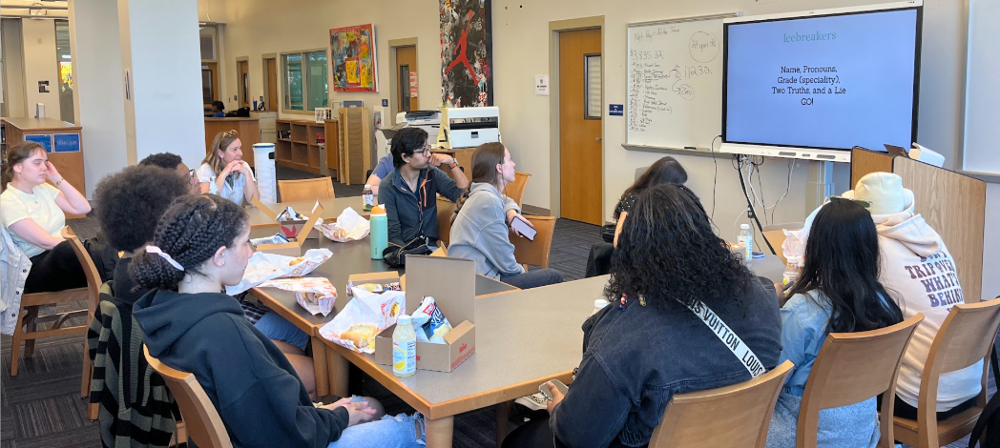
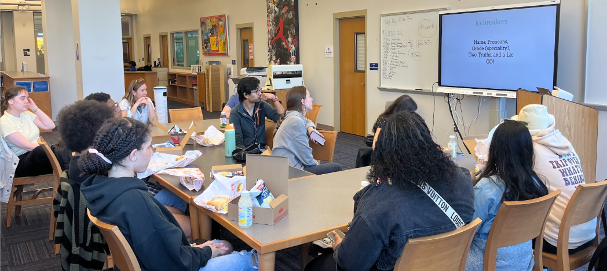

During my time with the Netter Center for Community Partnerships, I worked on a Youth Participatory Action Research (YPAR) project advocating for mental health awareness among high school students in West Philadelphia. Fostering critical thinking, collaboration, and leadership, students were empowered to identify and analyze mental health issues in their communities and advocate for evidence-based change. As a mentor, I guided students in project design, data analysis, and focus group facilitation. Together, we offered actionable recommendations for improving school-based mental health resources, highlighting the significance of accessible counseling and peer support. I contributed to a research process that advanced both personal growth and community impact. The final deliverable, The final deliverable, linked
here, reflects the collaborative efforts of mentors and students to address pressing social challenges.
 
